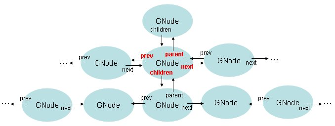

GTree
實現了平衡二元樹結構，在新增資料時會自動進行排序，並嘗試維持樹的高度與平衡，您可以利用Key來儲存資料至樹中，並利用Key來快速取得資料。
直接來看個簡單的例子：
#include <glib.h>
gint key_compare_func(gconstpointer a, gconstpointer b) {
return g_strcmp0(a, b);
}
gboolean traverse_func(gpointer key, gpointer value, gpointer data) {
g_print("key\t: %s\nvalue\t: %s\n\n", key, value);
return FALSE;
}
int main(int argc, char *argv[]) {
GTree *tree;
tree = g_tree_new(key_compare_func);
g_tree_insert(tree, "justin", "justin's message!!");
g_tree_insert(tree, "momor", "momor's message!!");
g_tree_insert(tree, "caterpillar", "caterpillar's message!!");
g_tree_foreach(tree, traverse_func, NULL);
g_tree_destroy(tree);
return 0;
}
這個程式會建立一個平衡二元樹，利用指定的key_compare_func比較Key的大小，在這邊利用
g_strcmp0()來比較字串順序，程式中插入三筆資料，插入的資料會自動依Key排序，所以取回時會是排序後的結果：
key : caterpillar
value : caterpillar's message!!
key : justin
value : justin's message!!
key : momor
value : momor's message!!
|
GNode則是另一種允許您建立任意分枝節點的樹結構，其定義如下：
typedef struct {
gpointer data;
GNode *next;
GNode *prev;
GNode *parent;
GNode *children;
} GNode;
其中parent、children為父子節點，prev、next是兄弟節點，其關係如下圖所示：

|
|